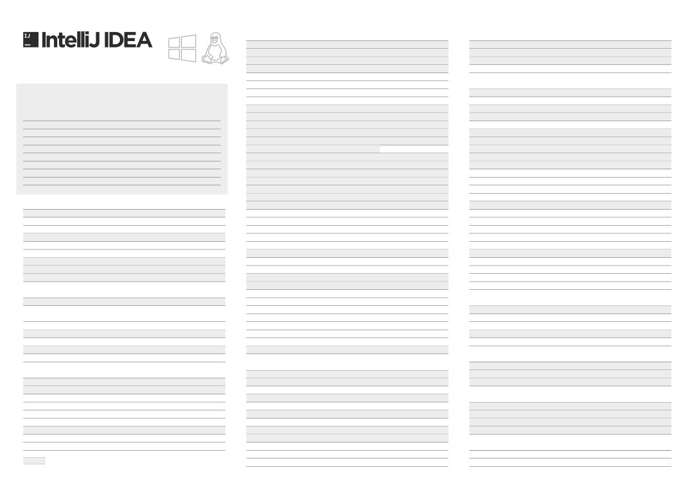

Editing（编辑）
Navigation（导航）
本的代码补全
Ctrl + Space
找类文件
Ctrl + N
能代码补全
Ctrl + Shift + Space
找所有类型文件
Ctrl + Shift + N
动结束代码，行末自动添加分号
Ctrl + Shift + Enter
往指定的变量 / 方法
Ctrl + Alt + Shift + N
indows 快捷键映射表
显示方法的参数信息
Ctrl + P
右切换打开的编辑tab页
Alt + Right/Left
速查看文档
Ctrl + Q
返回到前一个工具窗口
F12
看外部文档
Shift + F1
示代码简要信息
Ctrl +mouse
从工具窗口进入代码文件窗口
Esc
emember these Shortcuts（记住这些快捷键）
错误或警告处显示具体描述信息
Ctrl + F1
藏当前或最后一个活动的窗口
Shift + Esc
成代码
Alt + Insert
在当前文件跳转到某一行的指定处
Ctrl + G
智能代码补全
Ctrl + Shift + Space
盖方法（重写父类方法）
Ctrl + O
显示最近打开的文件记录列表
Ctrl + E
任何地方搜索
Double Shift
现方法（实现接口中的方法）
Ctrl + I
标跳转到当前单词左 / 右侧开头位置
Ctrl+Alt + Left/Right
示建议和快速补全代码
Alt + Enter
围代码
Ctrl + Alt + T
跳转到最后一个编辑的地方
Ctrl+Shift+Backspace
成代码
Alt + Ins
释/取消注释（行注释）
Ctrl + /
示当前文件选择目标弹出层
Alt + F1
示方法的参数信息
Ctrl + P
注释/取消注释（块注释）
Ctrl + Shift + /
入光标所在的方法、变量的接口或定义文件
Ctrl + B , Ctrl + Click
展选中档次范围
Ctrl + W
续选中代码块
Ctrl + W
转到接口实现方法
Ctrl + Alt + B
小选中单词范围
Ctrl + Shift + W
减少当前选中的代码块
Ctrl + Shift + W
打开快速定义查找
Ctrl + Shift + I
示最近打开的文件记录列表
Ctrl + E
显示上下文信息
Alt + Q
转到类型声明处
Ctrl + Shift + B
命名
Shift + F6
显示意向动作和快速修复代码
Alt + Enter
往当前光标所在方法的父类方法
Ctrl + U
格式化代码
Ctrl + Alt + L
转到前一个 / 后一个方法
Alt + Up/Down
优化import导入
Ctrl + Alt + O
动光标到代码块的开始/结束位置
Ctrl + ]/[
General（通用）
动缩进线
Ctrl + Alt + I
出当前Class结构定义
Ctrl + F12
开相应编号的工具窗口
Alt + #[0-9]
进代码/反向缩进代码
Tab / Shift + Tab
示当前类的层次结构
Ctrl + H
存全部
Ctrl + S
剪切
Ctrl + X , Shift +Delete
示方法层次结构
Ctrl + Shift + H
步、刷新
Ctrl + Alt + Y
复制
Ctrl + C , Ctrl + Insert
示调用层次结构
Ctrl + Alt + H
回切换最大化编辑器
Ctrl + Shift + F12
粘贴
Ctrl + V , Shift + Insert
转到下一个/上一个高亮错误的位置
F2 / Shift + F2
查当前文件与当前的配置文件
Alt + Shift + I
最近的缓冲区粘贴
Ctrl + Shift + V
辑/查看代码源
F4 / Ctrl + Enter
出快速设置导航对话框
Ctrl + BackQuote (`)
复制当前行或选定的块
Ctrl + D
示当前文件的导航条
Alt + Home
开系统设置对话框
Ctrl + Alt + S
删除当前光标所在的行
Ctrl + Y
切换书签
F11
开项目设置对话框
Ctrl + Alt + Shift + S
能的将代码拼接成一行
Ctrl + Shift + J
助记符切换书签
Ctrl + F11
找动作
Ctrl + Shift + A
展示建议和快速补全代码
Ctrl + Enter
定位到对应数值的书签位置
Ctrl + #[0-9]
始新的一行
Shift + Enter
显示所有书签
Shift + F11
Debugging（调试）
大小写切换选中的代码块
Ctrl + Shift + U
入下一步
F8 / F7
择直到代码块结束/开始
Ctrl + Shift + ] / [
Compile and Run（编译和运行）
智能进入下一步、跳出
Shift + F7 / Shift + F8
除到单词的末尾
Ctrl + Delete
译项目
Ctrl + F9
除到单词的开头
Ctrl + Backspace
译选择的file, package or module
Ctrl + Shift + F9
行到光标处
Alt + F9
开/折叠代码块
Ctrl + NumPad+ / -
出 Run / Debug 的配置项
Alt + Shift + F10/F9
出计算表达式窗口
Alt + F8
展开所有代码块
Ctrl+ Shift+NumPad+
Run / Debug
Shift + F10 / F9
恢复程序运行
F9
折叠所有代码块
Ctrl+Shift+NumPad-
编辑器运行上下文环境配置
Ctrl + Shift + F10
换断点
Ctrl + F8
闭活动的编辑器选项卡
Ctrl + F4
示断点信息
Ctrl + Shift + F8
Usage Search（用法查询）
Refactoring（重构）
文件中查找用法/ 在类中查找用法
Alt + F7 / Ctrl + F7
Search / Replace（查询/替换）
复制文件到指定目录
F5
文件中高亮显示用法
Ctrl + Shift + F7
询任何东西
Double Shift
移动文件到指定目录
F6
示用法
Ctrl + Alt + F7
件内查询
Ctrl + F
文件上为安全删除文件，弹出确认框
Alt + Delete
下查找/向上查找
F3 / Shift + F3
命名
Shift + F6
VCS / Local History（版本控制/本地历史记录）
件内替换
Ctrl + R
构选中的代码块
Ctrl + Alt + Shift + T
交代码到版本控制器
Ctrl + K
局查找（根据路径）
Ctrl + Shift + F
改签名
Ctrl + F6
版本控制器更新代码
Ctrl + T
局替换（根据路径）
Ctrl + Shift + R
内重构
Ctrl + Alt + N
送提交记录到远程版本仓库
Ctrl + Shift + K
择下一个匹配的项
Alt + J
选中的代码提取为方法
Ctrl + Alt + M
速弹出版本控制器操作面板
Alt + BackQuote (`)
择所有匹配的项
Ctrl + Alt + Shift + J
取变量
Ctrl + Alt + V
消选择匹配的项
Alt + Shift + J
取字段
Ctrl + Alt + F
Live Templates（动态代码模板）
取常量
Ctrl + Alt + C
中代码块，弹出模板选择窗口，应用动态模板 Ctrl + Alt + J
—Productivity Boosters
取参数
Ctrl + Alt + P
入自定义动态代码模板
Ctrl + J